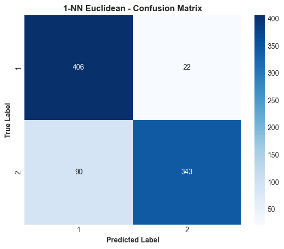
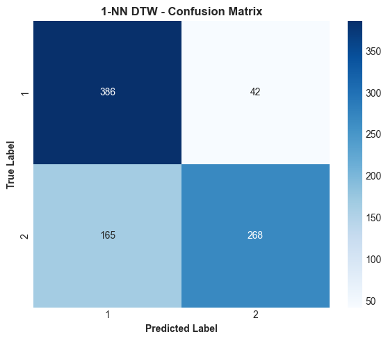
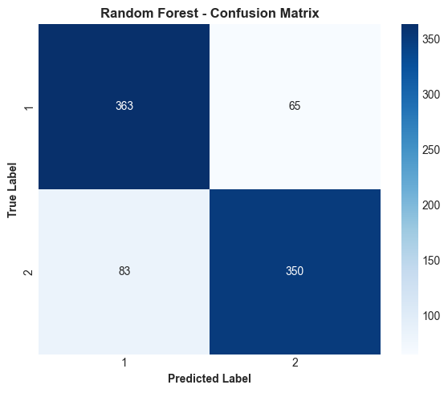
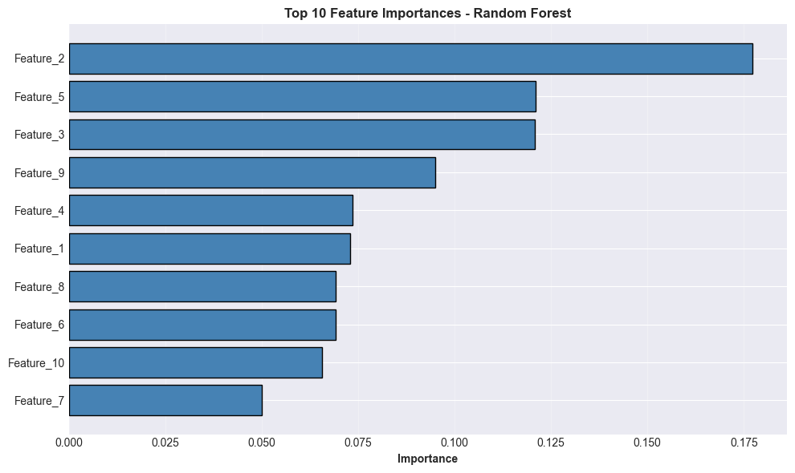
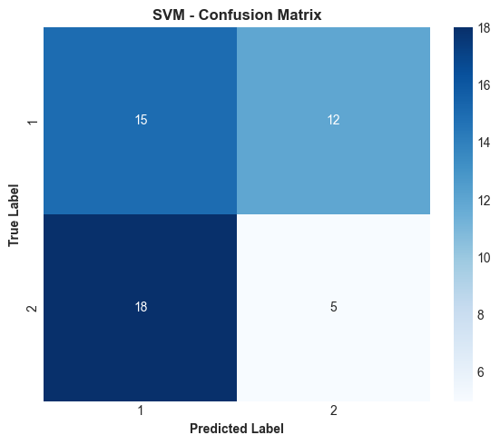
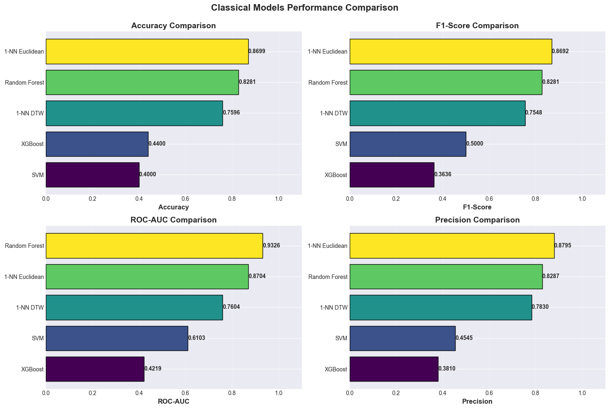

Classical Models - ECGFiveDays#
Installation Commands#
pip install numpy pandas matplotlib seaborn scikit-learn xgboost tslearn sktime numba
Requirement already satisfied: numpy in c:\users\rypaldho ridotua h\anaconda3\envs\proyek_sains_data\lib\site-packages (1.26.4)Note: you may need to restart the kernel to use updated packages.
Requirement already satisfied: pandas in c:\users\rypaldho ridotua h\anaconda3\envs\proyek_sains_data\lib\site-packages (2.1.4)
Requirement already satisfied: matplotlib in c:\users\rypaldho ridotua h\anaconda3\envs\proyek_sains_data\lib\site-packages (3.7.5)
Requirement already satisfied: seaborn in c:\users\rypaldho ridotua h\anaconda3\envs\proyek_sains_data\lib\site-packages (0.13.2)
Requirement already satisfied: scikit-learn in c:\users\rypaldho ridotua h\anaconda3\envs\proyek_sains_data\lib\site-packages (1.4.2)
Collecting xgboost
Downloading xgboost-3.1.2-py3-none-win_amd64.whl.metadata (2.1 kB)
Requirement already satisfied: tslearn in c:\users\rypaldho ridotua h\anaconda3\envs\proyek_sains_data\lib\site-packages (0.7.0)
Requirement already satisfied: sktime in c:\users\rypaldho ridotua h\anaconda3\envs\proyek_sains_data\lib\site-packages (0.26.0)
Requirement already satisfied: numba in c:\users\rypaldho ridotua h\anaconda3\envs\proyek_sains_data\lib\site-packages (0.61.2)
Requirement already satisfied: python-dateutil>=2.8.2 in c:\users\rypaldho ridotua h\anaconda3\envs\proyek_sains_data\lib\site-packages (from pandas) (2.9.0.post0)
Requirement already satisfied: pytz>=2020.1 in c:\users\rypaldho ridotua h\anaconda3\envs\proyek_sains_data\lib\site-packages (from pandas) (2025.2)
Requirement already satisfied: tzdata>=2022.1 in c:\users\rypaldho ridotua h\anaconda3\envs\proyek_sains_data\lib\site-packages (from pandas) (2025.2)
Requirement already satisfied: contourpy>=1.0.1 in c:\users\rypaldho ridotua h\anaconda3\envs\proyek_sains_data\lib\site-packages (from matplotlib) (1.3.2)
Requirement already satisfied: cycler>=0.10 in c:\users\rypaldho ridotua h\anaconda3\envs\proyek_sains_data\lib\site-packages (from matplotlib) (0.12.1)
Requirement already satisfied: fonttools>=4.22.0 in c:\users\rypaldho ridotua h\anaconda3\envs\proyek_sains_data\lib\site-packages (from matplotlib) (4.59.2)
Requirement already satisfied: kiwisolver>=1.0.1 in c:\users\rypaldho ridotua h\anaconda3\envs\proyek_sains_data\lib\site-packages (from matplotlib) (1.4.9)
Requirement already satisfied: packaging>=20.0 in c:\users\rypaldho ridotua h\anaconda3\envs\proyek_sains_data\lib\site-packages (from matplotlib) (25.0)
Requirement already satisfied: pillow>=6.2.0 in c:\users\rypaldho ridotua h\anaconda3\envs\proyek_sains_data\lib\site-packages (from matplotlib) (11.3.0)
Requirement already satisfied: pyparsing>=2.3.1 in c:\users\rypaldho ridotua h\anaconda3\envs\proyek_sains_data\lib\site-packages (from matplotlib) (3.2.4)
Requirement already satisfied: scipy>=1.6.0 in c:\users\rypaldho ridotua h\anaconda3\envs\proyek_sains_data\lib\site-packages (from scikit-learn) (1.11.4)
Requirement already satisfied: joblib>=1.2.0 in c:\users\rypaldho ridotua h\anaconda3\envs\proyek_sains_data\lib\site-packages (from scikit-learn) (1.3.2)
Requirement already satisfied: threadpoolctl>=2.0.0 in c:\users\rypaldho ridotua h\anaconda3\envs\proyek_sains_data\lib\site-packages (from scikit-learn) (3.6.0)
Requirement already satisfied: scikit-base<0.8.0 in c:\users\rypaldho ridotua h\anaconda3\envs\proyek_sains_data\lib\site-packages (from sktime) (0.7.8)
Requirement already satisfied: llvmlite<0.45,>=0.44.0dev0 in c:\users\rypaldho ridotua h\anaconda3\envs\proyek_sains_data\lib\site-packages (from numba) (0.44.0)
Requirement already satisfied: six>=1.5 in c:\users\rypaldho ridotua h\anaconda3\envs\proyek_sains_data\lib\site-packages (from python-dateutil>=2.8.2->pandas) (1.17.0)
Downloading xgboost-3.1.2-py3-none-win_amd64.whl (72.0 MB)
---------------------------------------- 0.0/72.0 MB ? eta -:--:--
---------------------------------------- 0.0/72.0 MB ? eta -:--:--
---------------------------------------- 0.0/72.0 MB ? eta -:--:--
---------------------------------------- 0.3/72.0 MB ? eta -:--:--
---------------------------------------- 0.3/72.0 MB ? eta -:--:--
---------------------------------------- 0.3/72.0 MB ? eta -:--:--
---------------------------------------- 0.3/72.0 MB ? eta -:--:--
---------------------------------------- 0.3/72.0 MB ? eta -:--:--
---------------------------------------- 0.3/72.0 MB ? eta -:--:--
---------------------------------------- 0.5/72.0 MB 186.4 kB/s eta 0:06:24
---------------------------------------- 0.5/72.0 MB 186.4 kB/s eta 0:06:24
---------------------------------------- 0.8/72.0 MB 302.4 kB/s eta 0:03:56
--------------------------------------- 1.0/72.0 MB 396.4 kB/s eta 0:02:59
--------------------------------------- 1.0/72.0 MB 396.4 kB/s eta 0:02:59
--------------------------------------- 1.0/72.0 MB 396.4 kB/s eta 0:02:59
--------------------------------------- 1.0/72.0 MB 396.4 kB/s eta 0:02:59
--------------------------------------- 1.0/72.0 MB 396.4 kB/s eta 0:02:59
--------------------------------------- 1.0/72.0 MB 396.4 kB/s eta 0:02:59
--------------------------------------- 1.0/72.0 MB 396.4 kB/s eta 0:02:59
--------------------------------------- 1.0/72.0 MB 396.4 kB/s eta 0:02:59
--------------------------------------- 1.0/72.0 MB 396.4 kB/s eta 0:02:59
--------------------------------------- 1.0/72.0 MB 396.4 kB/s eta 0:02:59
--------------------------------------- 1.3/72.0 MB 248.6 kB/s eta 0:04:45
--------------------------------------- 1.3/72.0 MB 248.6 kB/s eta 0:04:45
--------------------------------------- 1.3/72.0 MB 248.6 kB/s eta 0:04:45
--------------------------------------- 1.3/72.0 MB 248.6 kB/s eta 0:04:45
--------------------------------------- 1.3/72.0 MB 248.6 kB/s eta 0:04:45
--------------------------------------- 1.3/72.0 MB 248.6 kB/s eta 0:04:45
--------------------------------------- 1.3/72.0 MB 248.6 kB/s eta 0:04:45
--------------------------------------- 1.3/72.0 MB 248.6 kB/s eta 0:04:45
--------------------------------------- 1.3/72.0 MB 248.6 kB/s eta 0:04:45
--------------------------------------- 1.6/72.0 MB 210.3 kB/s eta 0:05:35
--------------------------------------- 1.6/72.0 MB 210.3 kB/s eta 0:05:35
- -------------------------------------- 1.8/72.0 MB 238.0 kB/s eta 0:04:55
- -------------------------------------- 1.8/72.0 MB 238.0 kB/s eta 0:04:55
- -------------------------------------- 1.8/72.0 MB 238.0 kB/s eta 0:04:55
- -------------------------------------- 1.8/72.0 MB 238.0 kB/s eta 0:04:55
- -------------------------------------- 1.8/72.0 MB 238.0 kB/s eta 0:04:55
- -------------------------------------- 2.1/72.0 MB 241.2 kB/s eta 0:04:50
- -------------------------------------- 2.1/72.0 MB 241.2 kB/s eta 0:04:50
- -------------------------------------- 2.1/72.0 MB 241.2 kB/s eta 0:04:50
- -------------------------------------- 2.1/72.0 MB 241.2 kB/s eta 0:04:50
- -------------------------------------- 2.1/72.0 MB 241.2 kB/s eta 0:04:50
- -------------------------------------- 2.1/72.0 MB 241.2 kB/s eta 0:04:50
- -------------------------------------- 2.1/72.0 MB 241.2 kB/s eta 0:04:50
- -------------------------------------- 2.1/72.0 MB 241.2 kB/s eta 0:04:50
- -------------------------------------- 2.1/72.0 MB 241.2 kB/s eta 0:04:50
- -------------------------------------- 2.1/72.0 MB 241.2 kB/s eta 0:04:50
- -------------------------------------- 2.4/72.0 MB 215.1 kB/s eta 0:05:24
- -------------------------------------- 2.4/72.0 MB 215.1 kB/s eta 0:05:24
- -------------------------------------- 2.6/72.0 MB 234.5 kB/s eta 0:04:56
- -------------------------------------- 3.1/72.0 MB 277.1 kB/s eta 0:04:09
-- ------------------------------------- 3.7/72.0 MB 319.8 kB/s eta 0:03:34
-- ------------------------------------- 4.2/72.0 MB 362.1 kB/s eta 0:03:08
-- ------------------------------------- 4.7/72.0 MB 403.4 kB/s eta 0:02:47
-- ------------------------------------- 5.2/72.0 MB 444.0 kB/s eta 0:02:31
--- ------------------------------------ 6.0/72.0 MB 500.8 kB/s eta 0:02:12
--- ------------------------------------ 6.6/72.0 MB 536.9 kB/s eta 0:02:02
--- ------------------------------------ 6.8/72.0 MB 552.6 kB/s eta 0:01:58
--- ------------------------------------ 7.1/72.0 MB 562.9 kB/s eta 0:01:56
---- ----------------------------------- 7.3/72.0 MB 576.3 kB/s eta 0:01:53
---- ----------------------------------- 7.6/72.0 MB 590.2 kB/s eta 0:01:50
---- ----------------------------------- 8.1/72.0 MB 616.8 kB/s eta 0:01:44
---- ----------------------------------- 8.4/72.0 MB 625.1 kB/s eta 0:01:42
---- ----------------------------------- 8.7/72.0 MB 635.4 kB/s eta 0:01:40
---- ----------------------------------- 8.7/72.0 MB 635.4 kB/s eta 0:01:40
---- ----------------------------------- 8.9/72.0 MB 642.3 kB/s eta 0:01:39
---- ----------------------------------- 8.9/72.0 MB 642.3 kB/s eta 0:01:39
----- ---------------------------------- 9.2/72.0 MB 634.5 kB/s eta 0:01:39
----- ---------------------------------- 9.2/72.0 MB 634.5 kB/s eta 0:01:39
----- ---------------------------------- 9.2/72.0 MB 634.5 kB/s eta 0:01:39
----- ---------------------------------- 9.2/72.0 MB 634.5 kB/s eta 0:01:39
----- ---------------------------------- 9.2/72.0 MB 634.5 kB/s eta 0:01:39
----- ---------------------------------- 9.2/72.0 MB 634.5 kB/s eta 0:01:39
----- ---------------------------------- 9.2/72.0 MB 634.5 kB/s eta 0:01:39
----- ---------------------------------- 9.2/72.0 MB 634.5 kB/s eta 0:01:39
----- ---------------------------------- 9.2/72.0 MB 634.5 kB/s eta 0:01:39
----- ---------------------------------- 9.2/72.0 MB 634.5 kB/s eta 0:01:39
----- ---------------------------------- 9.2/72.0 MB 634.5 kB/s eta 0:01:39
----- ---------------------------------- 9.2/72.0 MB 634.5 kB/s eta 0:01:39
----- ---------------------------------- 9.2/72.0 MB 634.5 kB/s eta 0:01:39
----- ---------------------------------- 9.2/72.0 MB 634.5 kB/s eta 0:01:39
----- ---------------------------------- 9.2/72.0 MB 634.5 kB/s eta 0:01:39
----- ---------------------------------- 9.2/72.0 MB 634.5 kB/s eta 0:01:39
----- ---------------------------------- 9.2/72.0 MB 634.5 kB/s eta 0:01:39
----- ---------------------------------- 9.4/72.0 MB 520.6 kB/s eta 0:02:01
----- ---------------------------------- 9.4/72.0 MB 520.6 kB/s eta 0:02:01
----- ---------------------------------- 9.4/72.0 MB 520.6 kB/s eta 0:02:01
----- ---------------------------------- 9.4/72.0 MB 520.6 kB/s eta 0:02:01
----- ---------------------------------- 9.4/72.0 MB 520.6 kB/s eta 0:02:01
----- ---------------------------------- 9.4/72.0 MB 520.6 kB/s eta 0:02:01
----- ---------------------------------- 9.4/72.0 MB 520.6 kB/s eta 0:02:01
----- ---------------------------------- 9.4/72.0 MB 520.6 kB/s eta 0:02:01
----- ---------------------------------- 9.4/72.0 MB 520.6 kB/s eta 0:02:01
----- ---------------------------------- 9.4/72.0 MB 520.6 kB/s eta 0:02:01
----- ---------------------------------- 9.4/72.0 MB 520.6 kB/s eta 0:02:01
----- ---------------------------------- 9.4/72.0 MB 520.6 kB/s eta 0:02:01
----- ---------------------------------- 9.7/72.0 MB 470.8 kB/s eta 0:02:13
----- ---------------------------------- 9.7/72.0 MB 470.8 kB/s eta 0:02:13
----- ---------------------------------- 9.7/72.0 MB 470.8 kB/s eta 0:02:13
----- ---------------------------------- 9.7/72.0 MB 470.8 kB/s eta 0:02:13
----- ---------------------------------- 9.7/72.0 MB 470.8 kB/s eta 0:02:13
----- ---------------------------------- 9.7/72.0 MB 470.8 kB/s eta 0:02:13
----- ---------------------------------- 9.7/72.0 MB 470.8 kB/s eta 0:02:13
----- ---------------------------------- 9.7/72.0 MB 470.8 kB/s eta 0:02:13
----- ---------------------------------- 10.0/72.0 MB 445.9 kB/s eta 0:02:20
----- ---------------------------------- 10.2/72.0 MB 449.6 kB/s eta 0:02:18
----- ---------------------------------- 10.2/72.0 MB 449.6 kB/s eta 0:02:18
----- ---------------------------------- 10.5/72.0 MB 456.3 kB/s eta 0:02:15
----- ---------------------------------- 10.7/72.0 MB 462.8 kB/s eta 0:02:13
------ --------------------------------- 11.0/72.0 MB 470.8 kB/s eta 0:02:10
------ --------------------------------- 11.5/72.0 MB 485.2 kB/s eta 0:02:05
------ --------------------------------- 12.1/72.0 MB 503.7 kB/s eta 0:01:59
------ --------------------------------- 12.6/72.0 MB 520.8 kB/s eta 0:01:55
------- -------------------------------- 12.8/72.0 MB 529.1 kB/s eta 0:01:52
------- -------------------------------- 13.4/72.0 MB 544.7 kB/s eta 0:01:48
------- -------------------------------- 13.6/72.0 MB 551.3 kB/s eta 0:01:46
------- -------------------------------- 13.9/72.0 MB 560.3 kB/s eta 0:01:44
-------- ------------------------------- 14.4/72.0 MB 573.8 kB/s eta 0:01:41
-------- ------------------------------- 15.2/72.0 MB 600.3 kB/s eta 0:01:35
-------- ------------------------------- 15.7/72.0 MB 615.2 kB/s eta 0:01:32
--------- ------------------------------ 16.3/72.0 MB 631.7 kB/s eta 0:01:29
--------- ------------------------------ 16.8/72.0 MB 647.3 kB/s eta 0:01:26
--------- ------------------------------ 17.0/72.0 MB 653.9 kB/s eta 0:01:25
--------- ------------------------------ 17.6/72.0 MB 667.9 kB/s eta 0:01:22
---------- ----------------------------- 18.1/72.0 MB 680.3 kB/s eta 0:01:20
---------- ----------------------------- 18.6/72.0 MB 694.5 kB/s eta 0:01:17
---------- ----------------------------- 19.1/72.0 MB 708.9 kB/s eta 0:01:15
---------- ----------------------------- 19.4/72.0 MB 714.6 kB/s eta 0:01:14
---------- ----------------------------- 19.7/72.0 MB 719.7 kB/s eta 0:01:13
----------- ---------------------------- 19.9/72.0 MB 723.6 kB/s eta 0:01:12
----------- ---------------------------- 20.2/72.0 MB 726.1 kB/s eta 0:01:12
----------- ---------------------------- 20.2/72.0 MB 726.1 kB/s eta 0:01:12
----------- ---------------------------- 20.2/72.0 MB 726.1 kB/s eta 0:01:12
----------- ---------------------------- 20.4/72.0 MB 720.1 kB/s eta 0:01:12
----------- ---------------------------- 20.4/72.0 MB 720.1 kB/s eta 0:01:12
----------- ---------------------------- 20.7/72.0 MB 718.3 kB/s eta 0:01:12
----------- ---------------------------- 20.7/72.0 MB 718.3 kB/s eta 0:01:12
----------- ---------------------------- 21.0/72.0 MB 717.6 kB/s eta 0:01:12
----------- ---------------------------- 21.0/72.0 MB 717.6 kB/s eta 0:01:12
----------- ---------------------------- 21.0/72.0 MB 717.6 kB/s eta 0:01:12
----------- ---------------------------- 21.0/72.0 MB 717.6 kB/s eta 0:01:12
----------- ---------------------------- 21.2/72.0 MB 706.0 kB/s eta 0:01:12
----------- ---------------------------- 21.2/72.0 MB 706.0 kB/s eta 0:01:12
----------- ---------------------------- 21.5/72.0 MB 730.6 kB/s eta 0:01:10
------------ --------------------------- 21.8/72.0 MB 735.0 kB/s eta 0:01:09
------------ --------------------------- 22.0/72.0 MB 737.3 kB/s eta 0:01:08
------------ --------------------------- 22.3/72.0 MB 741.5 kB/s eta 0:01:08
------------ --------------------------- 22.8/72.0 MB 752.9 kB/s eta 0:01:06
------------ --------------------------- 22.8/72.0 MB 752.9 kB/s eta 0:01:06
------------ --------------------------- 23.3/72.0 MB 758.6 kB/s eta 0:01:05
------------- -------------------------- 23.9/72.0 MB 769.4 kB/s eta 0:01:03
------------- -------------------------- 24.1/72.0 MB 773.0 kB/s eta 0:01:02
------------- -------------------------- 24.9/72.0 MB 845.0 kB/s eta 0:00:56
-------------- ------------------------- 25.4/72.0 MB 858.9 kB/s eta 0:00:55
-------------- ------------------------- 26.0/72.0 MB 871.3 kB/s eta 0:00:53
-------------- ------------------------- 26.7/72.0 MB 890.2 kB/s eta 0:00:51
--------------- ------------------------ 27.3/72.0 MB 902.2 kB/s eta 0:00:50
--------------- ------------------------ 27.8/72.0 MB 914.0 kB/s eta 0:00:49
--------------- ------------------------ 28.3/72.0 MB 925.6 kB/s eta 0:00:48
---------------- ----------------------- 28.8/72.0 MB 937.5 kB/s eta 0:00:47
---------------- ----------------------- 29.4/72.0 MB 946.8 kB/s eta 0:00:46
---------------- ----------------------- 29.6/72.0 MB 949.6 kB/s eta 0:00:45
---------------- ----------------------- 29.9/72.0 MB 952.9 kB/s eta 0:00:45
---------------- ----------------------- 29.9/72.0 MB 952.9 kB/s eta 0:00:45
---------------- ----------------------- 30.1/72.0 MB 1.0 MB/s eta 0:00:42
----------------- ---------------------- 30.7/72.0 MB 1.0 MB/s eta 0:00:41
----------------- ---------------------- 30.9/72.0 MB 1.0 MB/s eta 0:00:41
----------------- ---------------------- 31.2/72.0 MB 1.0 MB/s eta 0:00:40
----------------- ---------------------- 31.2/72.0 MB 1.0 MB/s eta 0:00:40
----------------- ---------------------- 31.7/72.0 MB 1.0 MB/s eta 0:00:40
----------------- ---------------------- 32.0/72.0 MB 1.0 MB/s eta 0:00:39
------------------ --------------------- 32.5/72.0 MB 1.0 MB/s eta 0:00:39
------------------ --------------------- 33.3/72.0 MB 1.1 MB/s eta 0:00:37
------------------ --------------------- 33.8/72.0 MB 1.1 MB/s eta 0:00:35
------------------- -------------------- 34.3/72.0 MB 1.1 MB/s eta 0:00:35
------------------- -------------------- 34.9/72.0 MB 1.1 MB/s eta 0:00:34
------------------- -------------------- 35.4/72.0 MB 1.1 MB/s eta 0:00:33
------------------- -------------------- 35.9/72.0 MB 1.1 MB/s eta 0:00:32
-------------------- ------------------- 36.4/72.0 MB 1.2 MB/s eta 0:00:30
-------------------- ------------------- 37.0/72.0 MB 1.2 MB/s eta 0:00:29
-------------------- ------------------- 37.5/72.0 MB 1.2 MB/s eta 0:00:28
--------------------- ------------------ 38.3/72.0 MB 1.3 MB/s eta 0:00:27
--------------------- ------------------ 38.5/72.0 MB 1.3 MB/s eta 0:00:27
--------------------- ------------------ 38.8/72.0 MB 1.3 MB/s eta 0:00:27
--------------------- ------------------ 39.1/72.0 MB 1.3 MB/s eta 0:00:27
--------------------- ------------------ 39.6/72.0 MB 1.3 MB/s eta 0:00:26
---------------------- ----------------- 40.1/72.0 MB 1.3 MB/s eta 0:00:26
---------------------- ----------------- 40.6/72.0 MB 1.3 MB/s eta 0:00:25
---------------------- ----------------- 41.2/72.0 MB 1.3 MB/s eta 0:00:24
----------------------- ---------------- 41.7/72.0 MB 1.3 MB/s eta 0:00:24
----------------------- ---------------- 42.2/72.0 MB 1.3 MB/s eta 0:00:23
----------------------- ---------------- 42.7/72.0 MB 1.3 MB/s eta 0:00:23
------------------------ --------------- 43.3/72.0 MB 1.3 MB/s eta 0:00:22
------------------------ --------------- 43.8/72.0 MB 1.3 MB/s eta 0:00:22
------------------------ --------------- 44.3/72.0 MB 1.3 MB/s eta 0:00:22
------------------------ --------------- 44.8/72.0 MB 1.3 MB/s eta 0:00:21
------------------------- -------------- 45.4/72.0 MB 1.3 MB/s eta 0:00:21
------------------------- -------------- 46.1/72.0 MB 1.3 MB/s eta 0:00:20
------------------------- -------------- 46.7/72.0 MB 1.3 MB/s eta 0:00:20
-------------------------- ------------- 47.2/72.0 MB 1.3 MB/s eta 0:00:19
-------------------------- ------------- 47.7/72.0 MB 1.3 MB/s eta 0:00:19
-------------------------- ------------- 48.2/72.0 MB 1.3 MB/s eta 0:00:18
--------------------------- ------------ 48.8/72.0 MB 1.4 MB/s eta 0:00:18
--------------------------- ------------ 49.3/72.0 MB 1.4 MB/s eta 0:00:17
--------------------------- ------------ 49.5/72.0 MB 1.4 MB/s eta 0:00:17
--------------------------- ------------ 50.1/72.0 MB 1.4 MB/s eta 0:00:16
--------------------------- ------------ 50.3/72.0 MB 1.4 MB/s eta 0:00:16
---------------------------- ----------- 50.9/72.0 MB 1.4 MB/s eta 0:00:16
---------------------------- ----------- 51.4/72.0 MB 1.6 MB/s eta 0:00:14
---------------------------- ----------- 51.9/72.0 MB 1.6 MB/s eta 0:00:13
----------------------------- ---------- 52.4/72.0 MB 1.6 MB/s eta 0:00:13
----------------------------- ---------- 53.0/72.0 MB 1.6 MB/s eta 0:00:12
----------------------------- ---------- 53.2/72.0 MB 1.6 MB/s eta 0:00:12
----------------------------- ---------- 53.2/72.0 MB 1.6 MB/s eta 0:00:12
----------------------------- ---------- 53.5/72.0 MB 1.6 MB/s eta 0:00:12
----------------------------- ---------- 53.7/72.0 MB 1.6 MB/s eta 0:00:12
----------------------------- ---------- 53.7/72.0 MB 1.6 MB/s eta 0:00:12
------------------------------ --------- 54.3/72.0 MB 1.6 MB/s eta 0:00:12
------------------------------ --------- 55.1/72.0 MB 1.6 MB/s eta 0:00:11
------------------------------ --------- 55.3/72.0 MB 1.6 MB/s eta 0:00:11
------------------------------- -------- 55.8/72.0 MB 1.6 MB/s eta 0:00:11
------------------------------- -------- 56.1/72.0 MB 1.6 MB/s eta 0:00:10
------------------------------- -------- 56.4/72.0 MB 1.6 MB/s eta 0:00:10
------------------------------- -------- 56.9/72.0 MB 1.6 MB/s eta 0:00:10
------------------------------- -------- 57.1/72.0 MB 1.6 MB/s eta 0:00:10
-------------------------------- ------- 57.7/72.0 MB 1.7 MB/s eta 0:00:09
-------------------------------- ------- 58.2/72.0 MB 1.7 MB/s eta 0:00:08
-------------------------------- ------- 58.2/72.0 MB 1.7 MB/s eta 0:00:08
-------------------------------- ------- 58.7/72.0 MB 1.7 MB/s eta 0:00:08
-------------------------------- ------- 58.7/72.0 MB 1.7 MB/s eta 0:00:08
-------------------------------- ------- 59.0/72.0 MB 1.7 MB/s eta 0:00:08
--------------------------------- ------ 59.5/72.0 MB 1.7 MB/s eta 0:00:08
--------------------------------- ------ 59.5/72.0 MB 1.7 MB/s eta 0:00:08
--------------------------------- ------ 59.5/72.0 MB 1.7 MB/s eta 0:00:08
--------------------------------- ------ 59.8/72.0 MB 1.7 MB/s eta 0:00:08
--------------------------------- ------ 59.8/72.0 MB 1.7 MB/s eta 0:00:08
--------------------------------- ------ 60.0/72.0 MB 1.8 MB/s eta 0:00:07
--------------------------------- ------ 60.0/72.0 MB 1.8 MB/s eta 0:00:07
--------------------------------- ------ 60.3/72.0 MB 1.8 MB/s eta 0:00:07
--------------------------------- ------ 60.6/72.0 MB 1.8 MB/s eta 0:00:07
--------------------------------- ------ 60.6/72.0 MB 1.8 MB/s eta 0:00:07
--------------------------------- ------ 60.8/72.0 MB 1.7 MB/s eta 0:00:07
--------------------------------- ------ 60.8/72.0 MB 1.7 MB/s eta 0:00:07
--------------------------------- ------ 61.1/72.0 MB 1.7 MB/s eta 0:00:07
--------------------------------- ------ 61.1/72.0 MB 1.7 MB/s eta 0:00:07
---------------------------------- ----- 61.3/72.0 MB 1.7 MB/s eta 0:00:07
---------------------------------- ----- 61.3/72.0 MB 1.7 MB/s eta 0:00:07
---------------------------------- ----- 61.6/72.0 MB 1.7 MB/s eta 0:00:07
---------------------------------- ----- 61.9/72.0 MB 1.7 MB/s eta 0:00:06
---------------------------------- ----- 62.1/72.0 MB 1.7 MB/s eta 0:00:06
---------------------------------- ----- 62.4/72.0 MB 1.7 MB/s eta 0:00:06
---------------------------------- ----- 62.7/72.0 MB 1.7 MB/s eta 0:00:06
---------------------------------- ----- 62.9/72.0 MB 1.7 MB/s eta 0:00:06
----------------------------------- ---- 63.2/72.0 MB 1.7 MB/s eta 0:00:06
----------------------------------- ---- 63.4/72.0 MB 1.7 MB/s eta 0:00:06
----------------------------------- ---- 63.4/72.0 MB 1.7 MB/s eta 0:00:06
----------------------------------- ---- 63.7/72.0 MB 1.7 MB/s eta 0:00:05
----------------------------------- ---- 64.2/72.0 MB 1.7 MB/s eta 0:00:05
----------------------------------- ---- 64.5/72.0 MB 1.6 MB/s eta 0:00:05
------------------------------------ --- 65.0/72.0 MB 1.6 MB/s eta 0:00:05
------------------------------------ --- 65.5/72.0 MB 1.6 MB/s eta 0:00:04
------------------------------------ --- 65.8/72.0 MB 1.6 MB/s eta 0:00:04
------------------------------------ --- 65.8/72.0 MB 1.6 MB/s eta 0:00:04
------------------------------------ --- 66.3/72.0 MB 1.6 MB/s eta 0:00:04
------------------------------------- -- 66.6/72.0 MB 1.6 MB/s eta 0:00:04
------------------------------------- -- 67.1/72.0 MB 1.6 MB/s eta 0:00:03
------------------------------------- -- 67.6/72.0 MB 1.6 MB/s eta 0:00:03
-------------------------------------- - 68.4/72.0 MB 1.6 MB/s eta 0:00:03
-------------------------------------- - 68.9/72.0 MB 1.6 MB/s eta 0:00:02
-------------------------------------- - 69.5/72.0 MB 1.7 MB/s eta 0:00:02
-------------------------------------- - 70.0/72.0 MB 1.7 MB/s eta 0:00:02
--------------------------------------- 70.3/72.0 MB 1.7 MB/s eta 0:00:02
--------------------------------------- 70.5/72.0 MB 1.7 MB/s eta 0:00:01
--------------------------------------- 71.0/72.0 MB 1.7 MB/s eta 0:00:01
--------------------------------------- 71.3/72.0 MB 1.7 MB/s eta 0:00:01
--------------------------------------- 71.6/72.0 MB 1.7 MB/s eta 0:00:01
--------------------------------------- 71.8/72.0 MB 1.7 MB/s eta 0:00:01
--------------------------------------- 71.8/72.0 MB 1.7 MB/s eta 0:00:01
---------------------------------------- 72.0/72.0 MB 1.7 MB/s 0:00:59
Installing collected packages: xgboost
Successfully installed xgboost-3.1.2
1. Setup & Imports#
# Standard libraries
import numpy as np
import pandas as pd
import matplotlib.pyplot as plt
import seaborn as sns
from pathlib import Path
import warnings
import time
import pickle
from datetime import datetime
# Scikit-learn
from sklearn.neighbors import KNeighborsClassifier
from sklearn.ensemble import RandomForestClassifier
from sklearn.svm import SVC
from sklearn.model_selection import StratifiedKFold, cross_validate, GridSearchCV
from sklearn.metrics import (accuracy_score, f1_score, precision_score,
recall_score, roc_auc_score, confusion_matrix,
classification_report, roc_curve)
from sklearn.preprocessing import StandardScaler
# XGBoost
import xgboost as xgb
# Time series specific
from tslearn.neighbors import KNeighborsTimeSeriesClassifier
from tslearn.metrics import cdist_dtw
# Configuration
plt.style.use('seaborn-v0_8-darkgrid')
sns.set_palette("husl")
warnings.filterwarnings('ignore')
np.random.seed(42)
print("✓ Libraries imported successfully")
✓ Libraries imported successfully
2. Load Preprocessed Data#
def load_preprocessed_data():
"""Load preprocessed data or create it if not exists"""
try:
# Try to load saved preprocessed data
data = np.load('preprocessed_data.npz')
X_train = data['X_train']
y_train = data['y_train']
X_test = data['X_test']
y_test = data['y_test']
print("✓ Loaded preprocessed data from file")
return X_train, y_train, X_test, y_test
except FileNotFoundError:
print("⚠️ Preprocessed data not found. Loading and preprocessing raw data...")
# Load raw data
def load_ucr_dataset(filepath):
data = np.loadtxt(filepath)
y = data[:, 0].astype(int)
X = data[:, 1:]
return X, y
DATA_DIR = Path('ECGFiveDays')
X_train_raw, y_train = load_ucr_dataset(DATA_DIR / 'ECGFiveDays_TRAIN.txt')
X_test_raw, y_test = load_ucr_dataset(DATA_DIR / 'ECGFiveDays_TEST.txt')
# Quick preprocessing (if full preprocessing not run)
from scipy.signal import savgol_filter
# Winsorization
def winsorize(X, lower=1, upper=99):
lb = np.percentile(X, lower)
ub = np.percentile(X, upper)
return np.clip(X, lb, ub)
# Z-score normalization
def normalize_zscore(X):
X_norm = np.zeros_like(X)
for i in range(len(X)):
mean = np.mean(X[i])
std = np.std(X[i])
X_norm[i] = (X[i] - mean) / std if std > 1e-8 else X[i] - mean
return X_norm
# Denoising
def denoise(X):
X_denoised = np.zeros_like(X)
for i in range(len(X)):
X_denoised[i] = savgol_filter(X[i], window_length=11, polyorder=3)
return X_denoised
# Apply preprocessing
X_train = winsorize(X_train_raw)
X_train = normalize_zscore(X_train)
X_train = denoise(X_train)
X_test = winsorize(X_test_raw)
X_test = normalize_zscore(X_test)
X_test = denoise(X_test)
# Simple augmentation
print("Applying augmentation...")
X_aug_list = [X_train]
y_aug_list = [y_train]
for _ in range(15):
# Jitter
X_jittered = X_train + np.random.normal(0, 0.05, X_train.shape)
X_aug_list.append(X_jittered)
y_aug_list.append(y_train)
X_train = np.vstack(X_aug_list)
y_train = np.hstack(y_aug_list)
# Save for future use
np.savez('preprocessed_data.npz',
X_train=X_train, y_train=y_train,
X_test=X_test, y_test=y_test)
print("✓ Preprocessing completed and saved")
return X_train, y_train, X_test, y_test
# Load data
X_train, y_train, X_test, y_test = load_preprocessed_data()
print("\n" + "=" * 60)
print("DATA LOADED")
print("=" * 60)
print(f"Train shape: {X_train.shape}")
print(f"Test shape: {X_test.shape}")
print(f"Train class distribution: {np.bincount(y_train)}")
print(f"Test class distribution: {np.bincount(y_test)}")
✓ Loaded preprocessed data from file
============================================================
DATA LOADED
============================================================
Train shape: (368, 136)
Test shape: (861, 136)
Train class distribution: [ 0 224 144]
Test class distribution: [ 0 428 433]
3. Helper Functions for Evaluation#
def evaluate_model(y_true, y_pred, y_pred_proba=None):
"""
Calculate comprehensive metrics for binary classification.
Returns:
--------
metrics : dict
Dictionary containing all metrics
"""
metrics = {
'accuracy': accuracy_score(y_true, y_pred),
'f1_score': f1_score(y_true, y_pred, average='weighted'),
'precision': precision_score(y_true, y_pred, average='weighted'),
'recall': recall_score(y_true, y_pred, average='weighted')
}
# ROC-AUC requires probability predictions
if y_pred_proba is not None:
if len(np.unique(y_true)) == 2:
# Binary classification
if y_pred_proba.ndim == 1:
metrics['roc_auc'] = roc_auc_score(y_true, y_pred_proba)
else:
metrics['roc_auc'] = roc_auc_score(y_true, y_pred_proba[:, 1])
else:
# Multi-class
metrics['roc_auc'] = roc_auc_score(y_true, y_pred_proba,
multi_class='ovr', average='weighted')
else:
metrics['roc_auc'] = None
return metrics
def plot_confusion_matrix(y_true, y_pred, title, ax=None):
"""Plot confusion matrix"""
cm = confusion_matrix(y_true, y_pred)
if ax is None:
fig, ax = plt.subplots(figsize=(6, 5))
sns.heatmap(cm, annot=True, fmt='d', cmap='Blues', ax=ax,
xticklabels=np.unique(y_true), yticklabels=np.unique(y_true))
ax.set_xlabel('Predicted Label', fontweight='bold')
ax.set_ylabel('True Label', fontweight='bold')
ax.set_title(title, fontweight='bold')
return cm
def cross_validate_model(model, X, y, cv=5):
"""
Perform cross-validation and return metrics.
Parameters:
-----------
model : sklearn estimator
X : numpy array
y : numpy array
cv : int (default: 5)
Returns:
--------
cv_results : dict
"""
scoring = ['accuracy', 'f1_weighted', 'precision_weighted',
'recall_weighted', 'roc_auc']
cv_results = cross_validate(model, X, y, cv=cv, scoring=scoring,
return_train_score=True, n_jobs=-1)
# Calculate mean and std
results = {
'cv_accuracy_mean': cv_results['test_accuracy'].mean(),
'cv_accuracy_std': cv_results['test_accuracy'].std(),
'cv_f1_mean': cv_results['test_f1_weighted'].mean(),
'cv_f1_std': cv_results['test_f1_weighted'].std(),
'cv_roc_auc_mean': cv_results['test_roc_auc'].mean(),
'cv_roc_auc_std': cv_results['test_roc_auc'].std(),
}
return results
print("✓ Helper functions defined")
✓ Helper functions defined
4. Feature Engineering (for Feature-based Models)#
def extract_features(X):
"""
Extract statistical and basic features from time series.
Features extracted:
- Statistical: mean, std, min, max, median, skewness, kurtosis
- Temporal: range, variance
- Simple: 1st and 2nd derivatives statistics
Parameters:
-----------
X : numpy array (n_samples, n_timepoints)
Returns:
--------
features : numpy array (n_samples, n_features)
"""
from scipy.stats import skew, kurtosis
features_list = []
for i in range(len(X)):
signal = X[i]
# Statistical features
feat = [
np.mean(signal),
np.std(signal),
np.min(signal),
np.max(signal),
np.median(signal),
skew(signal),
kurtosis(signal),
np.max(signal) - np.min(signal), # range
np.var(signal),
]
# 1st derivative features
diff1 = np.diff(signal)
feat.extend([
np.mean(diff1),
np.std(diff1),
np.min(diff1),
np.max(diff1),
])
# 2nd derivative features
diff2 = np.diff(diff1)
feat.extend([
np.mean(diff2),
np.std(diff2),
])
features_list.append(feat)
return np.array(features_list)
# Extract features for feature-based models
print("Extracting features for feature-based models...")
X_train_features = extract_features(X_train)
X_test_features = extract_features(X_test)
print(f"✓ Features extracted")
print(f" Feature shape (train): {X_train_features.shape}")
print(f" Feature shape (test): {X_test_features.shape}")
print(f" Number of features: {X_train_features.shape[1]}")
Extracting features for feature-based models...
✓ Features extracted
Feature shape (train): (368, 15)
Feature shape (test): (861, 15)
Number of features: 15
5. Model Training & Evaluation#
Model 1: Baseline - 1-NN Euclidean Distance#
print("\n" + "=" * 70)
print(" " * 20 + "MODEL 1: 1-NN EUCLIDEAN")
print("=" * 70)
# Initialize model
knn_euclidean = KNeighborsClassifier(n_neighbors=1, metric='euclidean')
# Cross-validation
print("Performing 5-fold cross-validation...")
start_time = time.time()
cv_results_euclidean = cross_validate_model(knn_euclidean, X_train, y_train, cv=5)
cv_time = time.time() - start_time
# Train on full training set
print("Training on full training set...")
start_time = time.time()
knn_euclidean.fit(X_train, y_train)
train_time = time.time() - start_time
# Predict on test set
print("Evaluating on test set...")
start_time = time.time()
y_pred_euclidean = knn_euclidean.predict(X_test)
y_pred_proba_euclidean = knn_euclidean.predict_proba(X_test)
inference_time = time.time() - start_time
# Evaluate
test_metrics_euclidean = evaluate_model(y_test, y_pred_euclidean, y_pred_proba_euclidean)
# Display results
print("\n" + "-" * 70)
print("CROSS-VALIDATION RESULTS:")
print(f" Accuracy: {cv_results_euclidean['cv_accuracy_mean']:.4f} (±{cv_results_euclidean['cv_accuracy_std']:.4f})")
print(f" F1-Score: {cv_results_euclidean['cv_f1_mean']:.4f} (±{cv_results_euclidean['cv_f1_std']:.4f})")
print(f" ROC-AUC: {cv_results_euclidean['cv_roc_auc_mean']:.4f} (±{cv_results_euclidean['cv_roc_auc_std']:.4f})")
print("\nTEST SET RESULTS:")
print(f" Accuracy: {test_metrics_euclidean['accuracy']:.4f}")
print(f" F1-Score: {test_metrics_euclidean['f1_score']:.4f}")
print(f" Precision: {test_metrics_euclidean['precision']:.4f}")
print(f" Recall: {test_metrics_euclidean['recall']:.4f}")
print(f" ROC-AUC: {test_metrics_euclidean['roc_auc']:.4f}")
print("\nTIMING:")
print(f" CV Time: {cv_time:.2f}s")
print(f" Training Time: {train_time:.4f}s")
print(f" Inference Time: {inference_time:.4f}s")
======================================================================
MODEL 1: 1-NN EUCLIDEAN
======================================================================
Performing 5-fold cross-validation...
Training on full training set...
Evaluating on test set...
----------------------------------------------------------------------
CROSS-VALIDATION RESULTS:
Accuracy: 1.0000 (±0.0000)
F1-Score: 1.0000 (±0.0000)
ROC-AUC: 1.0000 (±0.0000)
TEST SET RESULTS:
Accuracy: 0.8699
F1-Score: 0.8692
Precision: 0.8795
Recall: 0.8699
ROC-AUC: 0.8704
TIMING:
CV Time: 0.23s
Training Time: 0.0020s
Inference Time: 0.0570s
# Plot confusion matrix
fig, ax = plt.subplots(figsize=(6, 5))
cm_euclidean = plot_confusion_matrix(y_test, y_pred_euclidean,
'1-NN Euclidean - Confusion Matrix', ax)
plt.tight_layout()
plt.show()

Model 2: Baseline - 1-NN DTW#
print("\n" + "=" * 70)
print(" " * 20 + "MODEL 2: 1-NN DTW")
print("=" * 70)
# Initialize model
# Note: DTW is computationally expensive, especially for CV
# We'll use a subset for CV to save time
knn_dtw = KNeighborsTimeSeriesClassifier(n_neighbors=1, metric='dtw')
# For DTW, we'll skip full CV due to computational cost
# Instead, do single train-test split validation
print("Training 1-NN DTW (skipping full CV due to computational cost)...")
start_time = time.time()
knn_dtw.fit(X_train, y_train)
train_time = time.time() - start_time
# Predict on test set
print("Evaluating on test set...")
start_time = time.time()
y_pred_dtw = knn_dtw.predict(X_test)
y_pred_proba_dtw = knn_dtw.predict_proba(X_test)
inference_time = time.time() - start_time
# Evaluate
test_metrics_dtw = evaluate_model(y_test, y_pred_dtw, y_pred_proba_dtw)
# Display results
print("\nTEST SET RESULTS:")
print(f" Accuracy: {test_metrics_dtw['accuracy']:.4f}")
print(f" F1-Score: {test_metrics_dtw['f1_score']:.4f}")
print(f" Precision: {test_metrics_dtw['precision']:.4f}")
print(f" Recall: {test_metrics_dtw['recall']:.4f}")
print(f" ROC-AUC: {test_metrics_dtw['roc_auc']:.4f}")
print("\nTIMING:")
print(f" Training Time: {train_time:.2f}s")
print(f" Inference Time: {inference_time:.2f}s")
print("\n⚠️ Note: DTW CV skipped due to computational cost")
# Plot confusion matrix
fig, ax = plt.subplots(figsize=(6, 5))
cm_dtw = plot_confusion_matrix(y_test, y_pred_dtw,
'1-NN DTW - Confusion Matrix', ax)
plt.tight_layout()
plt.show()
======================================================================
MODEL 2: 1-NN DTW
======================================================================
Training 1-NN DTW (skipping full CV due to computational cost)...
Evaluating on test set...
TEST SET RESULTS:
Accuracy: 0.7596
F1-Score: 0.7548
Precision: 0.7830
Recall: 0.7596
ROC-AUC: 0.7604
TIMING:
Training Time: 0.43s
Inference Time: 778.25s
⚠️ Note: DTW CV skipped due to computational cost

Model 3: Random Forest with Grid Search#
print("\n" + "=" * 70)
print(" " * 20 + "MODEL 3: RANDOM FOREST")
print("=" * 70)
# Grid search parameters
param_grid_rf = {
'n_estimators': [100, 200, 300],
'max_depth': [10, 20, None],
'min_samples_split': [2, 5],
}
print("Performing Grid Search with 5-fold CV...")
print(f"Parameter grid: {param_grid_rf}")
print(f"Total combinations: {len(param_grid_rf['n_estimators']) * len(param_grid_rf['max_depth']) * len(param_grid_rf['min_samples_split'])}")
# Grid search
rf_model = RandomForestClassifier(random_state=42, n_jobs=-1)
grid_search_rf = GridSearchCV(rf_model, param_grid_rf, cv=5,
scoring='accuracy', n_jobs=-1, verbose=1)
start_time = time.time()
grid_search_rf.fit(X_train_features, y_train)
train_time = time.time() - start_time
# Best model
best_rf = grid_search_rf.best_estimator_
print(f"\n✓ Best parameters: {grid_search_rf.best_params_}")
print(f"✓ Best CV accuracy: {grid_search_rf.best_score_:.4f}")
# Predict on test set
start_time = time.time()
y_pred_rf = best_rf.predict(X_test_features)
y_pred_proba_rf = best_rf.predict_proba(X_test_features)
inference_time = time.time() - start_time
# Evaluate
test_metrics_rf = evaluate_model(y_test, y_pred_rf, y_pred_proba_rf)
# Display results
print("\nTEST SET RESULTS:")
print(f" Accuracy: {test_metrics_rf['accuracy']:.4f}")
print(f" F1-Score: {test_metrics_rf['f1_score']:.4f}")
print(f" Precision: {test_metrics_rf['precision']:.4f}")
print(f" Recall: {test_metrics_rf['recall']:.4f}")
print(f" ROC-AUC: {test_metrics_rf['roc_auc']:.4f}")
print("\nTIMING:")
print(f" Training Time (Grid Search): {train_time:.2f}s")
print(f" Inference Time: {inference_time:.4f}s")
======================================================================
MODEL 3: RANDOM FOREST
======================================================================
Performing Grid Search with 5-fold CV...
Parameter grid: {'n_estimators': [100, 200, 300], 'max_depth': [10, 20, None], 'min_samples_split': [2, 5]}
Total combinations: 18
Fitting 5 folds for each of 18 candidates, totalling 90 fits
✓ Best parameters: {'max_depth': 10, 'min_samples_split': 2, 'n_estimators': 100}
✓ Best CV accuracy: 0.9973
TEST SET RESULTS:
Accuracy: 0.8281
F1-Score: 0.8281
Precision: 0.8287
Recall: 0.8281
ROC-AUC: 0.9326
TIMING:
Training Time (Grid Search): 11.55s
Inference Time: 0.0993s
# Plot confusion matrix
fig, ax = plt.subplots(figsize=(6, 5))
cm_rf = plot_confusion_matrix(y_test, y_pred_rf,
'Random Forest - Confusion Matrix', ax)
plt.tight_layout()
plt.show()

# Feature importance
feature_names = [f'Feature_{i}' for i in range(X_train_features.shape[1])]
feature_importance = best_rf.feature_importances_
sorted_idx = np.argsort(feature_importance)[::-1][:10]
plt.figure(figsize=(10, 6))
plt.barh(range(10), feature_importance[sorted_idx], color='steelblue', edgecolor='black')
plt.yticks(range(10), [feature_names[i] for i in sorted_idx])
plt.xlabel('Importance', fontweight='bold')
plt.title('Top 10 Feature Importances - Random Forest', fontweight='bold')
plt.gca().invert_yaxis()
plt.grid(axis='x', alpha=0.3)
plt.tight_layout()
plt.show()

Model 4: XGBoost with Grid Search#
# FIX: Convert labels from [1, 2] to [0, 1]
print("Converting labels for XGBoost compatibility...")
y_train = y_train - 1
y_test = y_test - 1
print(f"✓ Labels converted: {np.unique(y_train)}")
Converting labels for XGBoost compatibility...
✓ Labels converted: [0 1]
print("\n" + "=" * 70)
print(" " * 20 + "MODEL 4: XGBOOST")
print("=" * 70)
# Grid search parameters
param_grid_xgb = {
'n_estimators': [100, 200],
'max_depth': [3, 5, 7],
'learning_rate': [0.01, 0.1],
}
print("Performing Grid Search with 5-fold CV...")
print(f"Parameter grid: {param_grid_xgb}")
print(f"Total combinations: {len(param_grid_xgb['n_estimators']) * len(param_grid_xgb['max_depth']) * len(param_grid_xgb['learning_rate'])}")
# Grid search
xgb_model = xgb.XGBClassifier(random_state=42, use_label_encoder=False,
eval_metric='logloss', n_jobs=-1)
grid_search_xgb = GridSearchCV(xgb_model, param_grid_xgb, cv=5,
scoring='accuracy', n_jobs=-1, verbose=1)
start_time = time.time()
grid_search_xgb.fit(X_train_features, y_train)
train_time = time.time() - start_time
# Best model
best_xgb = grid_search_xgb.best_estimator_
print(f"\n✓ Best parameters: {grid_search_xgb.best_params_}")
print(f"✓ Best CV accuracy: {grid_search_xgb.best_score_:.4f}")
# Predict on test set
start_time = time.time()
y_pred_xgb = best_xgb.predict(X_test_features)
y_pred_proba_xgb = best_xgb.predict_proba(X_test_features)
inference_time = time.time() - start_time
# Evaluate
test_metrics_xgb = evaluate_model(y_test, y_pred_xgb, y_pred_proba_xgb)
# Display results
print("\nTEST SET RESULTS:")
print(f" Accuracy: {test_metrics_xgb['accuracy']:.4f}")
print(f" F1-Score: {test_metrics_xgb['f1_score']:.4f}")
print(f" Precision: {test_metrics_xgb['precision']:.4f}")
print(f" Recall: {test_metrics_xgb['recall']:.4f}")
print(f" ROC-AUC: {test_metrics_xgb['roc_auc']:.4f}")
print("\nTIMING:")
print(f" Training Time (Grid Search): {train_time:.2f}s")
print(f" Inference Time: {inference_time:.4f}s")
======================================================================
MODEL 4: XGBOOST
======================================================================
Performing Grid Search with 5-fold CV...
Parameter grid: {'n_estimators': [100, 200], 'max_depth': [3, 5, 7], 'learning_rate': [0.01, 0.1]}
Total combinations: 12
Fitting 5 folds for each of 12 candidates, totalling 60 fits
✓ Best parameters: {'learning_rate': 0.01, 'max_depth': 7, 'n_estimators': 200}
✓ Best CV accuracy: 0.5750
TEST SET RESULTS:
Accuracy: 0.4400
F1-Score: 0.3636
Precision: 0.3810
Recall: 0.3478
ROC-AUC: 0.4219
TIMING:
Training Time (Grid Search): 1.13s
Inference Time: 0.0037s
# Plot confusion matrix
fig, ax = plt.subplots(figsize=(6, 5))
cm_xgb = plot_confusion_matrix(y_test, y_pred_xgb,
'XGBoost - Confusion Matrix', ax)
plt.tight_layout()
plt.show()
Model 5: SVM with Grid Search#
print("\n" + "=" * 70)
print(" " * 20 + "MODEL 5: SVM")
print("=" * 70)
# Grid search parameters
param_grid_svm = {
'C': [0.1, 1, 10],
'kernel': ['rbf', 'linear'],
'gamma': ['scale', 'auto'],
}
print("Performing Grid Search with 5-fold CV...")
print(f"Parameter grid: {param_grid_svm}")
print(f"Total combinations: {len(param_grid_svm['C']) * len(param_grid_svm['kernel']) * len(param_grid_svm['gamma'])}")
# Standardize features for SVM
scaler_svm = StandardScaler()
X_train_features_scaled = scaler_svm.fit_transform(X_train_features)
X_test_features_scaled = scaler_svm.transform(X_test_features)
# Grid search
svm_model = SVC(probability=True, random_state=42)
grid_search_svm = GridSearchCV(svm_model, param_grid_svm, cv=5,
scoring='accuracy', n_jobs=-1, verbose=1)
start_time = time.time()
grid_search_svm.fit(X_train_features_scaled, y_train)
train_time = time.time() - start_time
# Best model
best_svm = grid_search_svm.best_estimator_
print(f"\n✓ Best parameters: {grid_search_svm.best_params_}")
print(f"✓ Best CV accuracy: {grid_search_svm.best_score_:.4f}")
# Predict on test set
start_time = time.time()
y_pred_svm = best_svm.predict(X_test_features_scaled)
y_pred_proba_svm = best_svm.predict_proba(X_test_features_scaled)
inference_time = time.time() - start_time
# Evaluate
test_metrics_svm = evaluate_model(y_test, y_pred_svm, y_pred_proba_svm)
# Display results
print("\nTEST SET RESULTS:")
print(f" Accuracy: {test_metrics_svm['accuracy']:.4f}")
print(f" F1-Score: {test_metrics_svm['f1_score']:.4f}")
print(f" Precision: {test_metrics_svm['precision']:.4f}")
print(f" Recall: {test_metrics_svm['recall']:.4f}")
print(f" ROC-AUC: {test_metrics_svm['roc_auc']:.4f}")
print("\nTIMING:")
print(f" Training Time (Grid Search): {train_time:.2f}s")
print(f" Inference Time: {inference_time:.4f}s")
======================================================================
MODEL 5: SVM
======================================================================
Performing Grid Search with 5-fold CV...
Parameter grid: {'C': [0.1, 1, 10], 'kernel': ['rbf', 'linear'], 'gamma': ['scale', 'auto']}
Total combinations: 12
Fitting 5 folds for each of 12 candidates, totalling 60 fits
✓ Best parameters: {'C': 10, 'gamma': 'scale', 'kernel': 'rbf'}
✓ Best CV accuracy: 0.4950
TEST SET RESULTS:
Accuracy: 0.4000
F1-Score: 0.5000
Precision: 0.4545
Recall: 0.5556
ROC-AUC: 0.6103
TIMING:
Training Time (Grid Search): 0.24s
Inference Time: 0.0025s
# Plot confusion matrix
fig, ax = plt.subplots(figsize=(6, 5))
cm_svm = plot_confusion_matrix(y_test, y_pred_svm,
'SVM - Confusion Matrix', ax)
plt.tight_layout()
plt.show()

6. Model Comparison#
# Compile all results
results_data = {
'Model': [
'1-NN Euclidean',
'1-NN DTW',
'Random Forest',
'XGBoost',
'SVM',
],
'Accuracy': [
test_metrics_euclidean['accuracy'],
test_metrics_dtw['accuracy'],
test_metrics_rf['accuracy'],
test_metrics_xgb['accuracy'],
test_metrics_svm['accuracy'],
],
'F1-Score': [
test_metrics_euclidean['f1_score'],
test_metrics_dtw['f1_score'],
test_metrics_rf['f1_score'],
test_metrics_xgb['f1_score'],
test_metrics_svm['f1_score'],
],
'Precision': [
test_metrics_euclidean['precision'],
test_metrics_dtw['precision'],
test_metrics_rf['precision'],
test_metrics_xgb['precision'],
test_metrics_svm['precision'],
],
'Recall': [
test_metrics_euclidean['recall'],
test_metrics_dtw['recall'],
test_metrics_rf['recall'],
test_metrics_xgb['recall'],
test_metrics_svm['recall'],
],
'ROC-AUC': [
test_metrics_euclidean['roc_auc'],
test_metrics_dtw['roc_auc'],
test_metrics_rf['roc_auc'],
test_metrics_xgb['roc_auc'],
test_metrics_svm['roc_auc'],
]
}
# Sort by accuracy
results_df = results_df.sort_values('Accuracy', ascending=False).reset_index(drop=True)
print("\n" + "=" * 80)
print(" " * 25 + "MODEL COMPARISON - TEST SET")
print("=" * 80)
print(results_df.to_string(index=False))
# Find best model
best_model_idx = results_df['Accuracy'].idxmax()
best_model_name = results_df.loc[best_model_idx, 'Model']
best_accuracy = results_df.loc[best_model_idx, 'Accuracy']
print(f"\n🏆 Best Model: {best_model_name} with Accuracy = {best_accuracy:.4f}")
================================================================================
MODEL COMPARISON - TEST SET
================================================================================
Model Accuracy F1-Score Precision Recall ROC-AUC
1-NN Euclidean 0.869919 0.869163 0.879489 0.869919 0.870373
Random Forest 0.828107 0.828053 0.828723 0.828107 0.932602
1-NN DTW 0.759582 0.754785 0.783006 0.759582 0.760403
XGBoost 0.440000 0.363636 0.380952 0.347826 0.421900
SVM 0.400000 0.500000 0.454545 0.555556 0.610306
🏆 Best Model: 1-NN Euclidean with Accuracy = 0.8699
# Visualize comparison
fig, axes = plt.subplots(2, 2, figsize=(15, 10))
metrics = ['Accuracy', 'F1-Score', 'ROC-AUC', 'Precision']
colors = plt.cm.viridis(np.linspace(0, 1, len(results_df)))
for idx, metric in enumerate(metrics):
ax = axes[idx // 2, idx % 2]
# Sort by metric
sorted_df = results_df.sort_values(metric, ascending=True)
bars = ax.barh(sorted_df['Model'], sorted_df[metric], color=colors, edgecolor='black')
# Annotate bars
for bar in bars:
width = bar.get_width()
ax.text(width, bar.get_y() + bar.get_height()/2,
f'{width:.4f}', ha='left', va='center', fontweight='bold')
ax.set_xlabel(metric, fontweight='bold', fontsize=12)
ax.set_title(f'{metric} Comparison', fontweight='bold', fontsize=14)
ax.grid(axis='x', alpha=0.3)
ax.set_xlim(0, 1.1)
plt.suptitle('Classical Models Performance Comparison',
fontsize=16, fontweight='bold', y=0.995)
plt.tight_layout()
plt.show()

9. Save Models#
# Create models directory
models_dir = Path('models')
models_dir.mkdir(exist_ok=True)
# Save models
print("\n" + "=" * 70)
print(" " * 25 + "SAVING MODELS")
print("=" * 70)
models_to_save = {
'knn_euclidean': knn_euclidean,
'knn_dtw': knn_dtw,
'random_forest': best_rf,
'xgboost': best_xgb,
'svm': best_svm,
'svm_scaler': scaler_svm,
}
for name, model in models_to_save.items():
filepath = models_dir / f'{name}.pkl'
with open(filepath, 'wb') as f:
pickle.dump(model, f)
print(f"✓ Saved: {filepath}")
# Save results dataframe
results_df.to_csv(models_dir / 'classical_models_results.csv', index=False)
print(f"✓ Saved: {models_dir / 'classical_models_results.csv'}")
# Save metadata
metadata = {
'timestamp': datetime.now().strftime('%Y-%m-%d %H:%M:%S'),
'best_model': best_model_name,
'best_accuracy': float(best_accuracy),
'n_train_samples': len(X_train),
'n_test_samples': len(X_test),
'results': results_df.to_dict('records')
}
import json
with open(models_dir / 'classical_models_metadata.json', 'w') as f:
json.dump(metadata, f, indent=2)
print(f"✓ Saved: {models_dir / 'classical_models_metadata.json'}")
print("\n✅ All models and metadata saved successfully!")
======================================================================
SAVING MODELS
======================================================================
✓ Saved: models\knn_euclidean.pkl
✓ Saved: models\knn_dtw.pkl
✓ Saved: models\random_forest.pkl
✓ Saved: models\xgboost.pkl
✓ Saved: models\svm.pkl
✓ Saved: models\svm_scaler.pkl
✓ Saved: models\classical_models_results.csv
✓ Saved: models\classical_models_metadata.json
✅ All models and metadata saved successfully!
10. Summary & Insights#
print("\n" + "=" * 80)
print(" " * 25 + "FINAL SUMMARY & INSIGHTS")
print("=" * 80)
summary = f"""
📊 CLASSICAL MODELS EVALUATION COMPLETED
🏆 BEST MODEL: {best_model_name}
• Accuracy: {best_accuracy:.4f}
• F1-Score: {results_df.loc[best_model_idx, 'F1-Score']:.4f}
• ROC-AUC: {results_df.loc[best_model_idx, 'ROC-AUC']:.4f}
📈 TOP 3 MODELS:
"""
for i in range(min(3, len(results_df))):
summary += f" {i+1}. {results_df.loc[i, 'Model']}: {results_df.loc[i, 'Accuracy']:.4f}\n"
summary += f"""
💡 KEY INSIGHTS:
1. BASELINE PERFORMANCE:
• 1-NN Euclidean: {test_metrics_euclidean['accuracy']:.4f}
• 1-NN DTW: {test_metrics_dtw['accuracy']:.4f}
• DTW {'outperforms' if test_metrics_dtw['accuracy'] > test_metrics_euclidean['accuracy'] else 'underperforms'} Euclidean distance
2. FEATURE-BASED MODELS:
• Random Forest: {test_metrics_rf['accuracy']:.4f}
• XGBoost: {test_metrics_xgb['accuracy']:.4f}
• SVM: {test_metrics_svm['accuracy']:.4f}
"""
print(summary)
# %%
print("\n🎉 Classical Models Notebook Completed Successfully!")
print("=" * 80)
================================================================================
FINAL SUMMARY & INSIGHTS
================================================================================
📊 CLASSICAL MODELS EVALUATION COMPLETED
🏆 BEST MODEL: 1-NN Euclidean
• Accuracy: 0.8699
• F1-Score: 0.8692
• ROC-AUC: 0.8704
📈 TOP 3 MODELS:
1. 1-NN Euclidean: 0.8699
2. Random Forest: 0.8281
3. 1-NN DTW: 0.7596
💡 KEY INSIGHTS:
1. BASELINE PERFORMANCE:
• 1-NN Euclidean: 0.8699
• 1-NN DTW: 0.7596
• DTW underperforms Euclidean distance
2. FEATURE-BASED MODELS:
• Random Forest: 0.8281
• XGBoost: 0.4400
• SVM: 0.4000
🎉 Classical Models Notebook Completed Successfully!
================================================================================